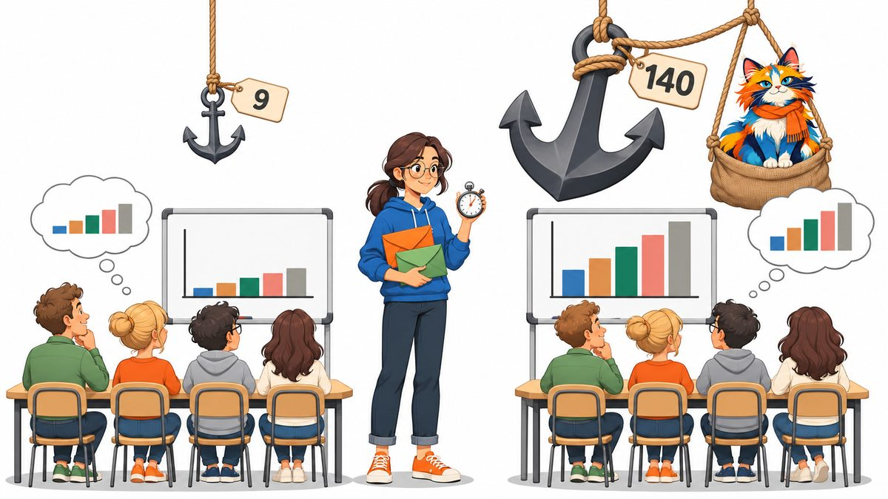

Занятие 5 · блок 12
A/B на аудитории

Проведём настоящий эксперимент — на вас. Бот случайно разделил вас на две группы. Пройдём весь путь: разбиение, проверка SRM, критерий, интервал, вывод. Что именно мы меняли — скажу после.
Сколько лет?
Бот задаст два вопроса о Махатме Ганди. Ответь на оба быстро, не гугля: сначала «да» или «нет», потом число — сколько ему было лет, когда он умер.
После игры впиши сюда числа из сводки бота.
| Группа | Человек | Средний ответ | Стандартное отклонение |
|---|---|---|---|
| A | |||
| B |
Задача 18. Полный пайплайн на данных зала
Проведи анализ эксперимента по сводке: проверь SRM, посчитай разницу, SE, t-критерий Уэлча, 95%-й интервал и сформулируй вывод словами. Числа для примера: A — 20 человек, среднее 55, отклонение 15; B — 20 человек, среднее 68, отклонение 14.
Пайплайн целиком
Разбиение → SRM → метрика на единицу рандомизации → критерий → интервал → вывод словами. На вас он только что сработал.